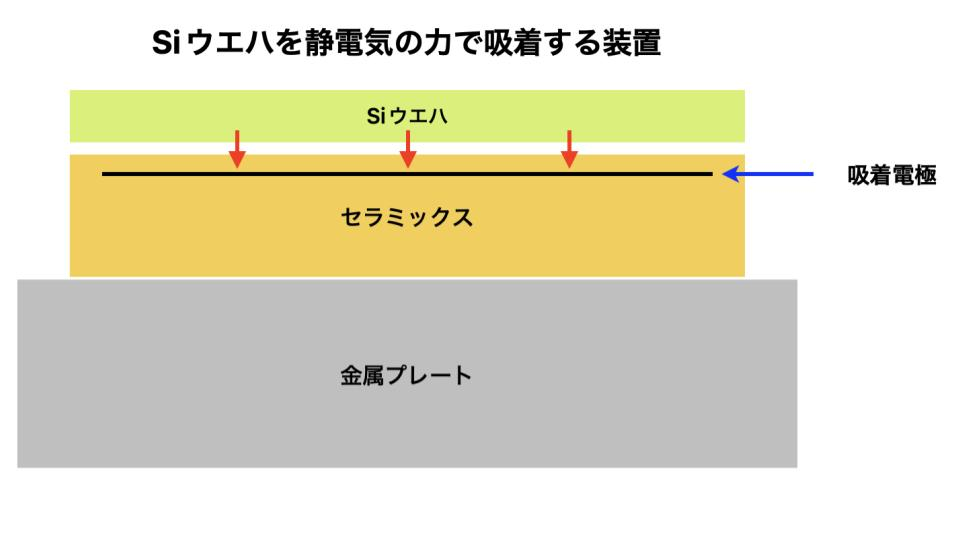
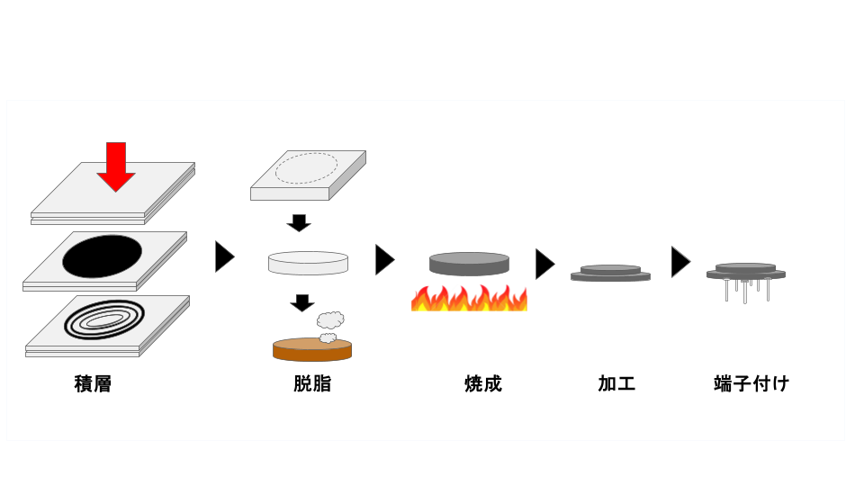
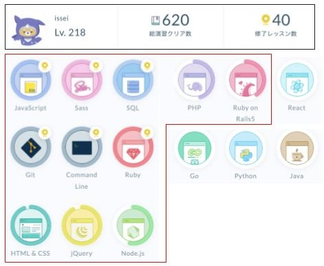
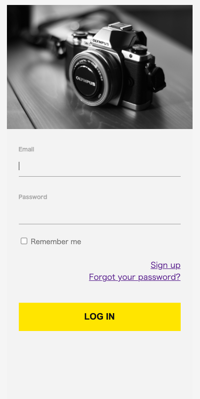
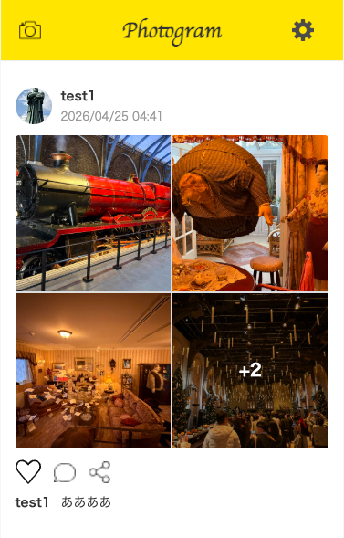
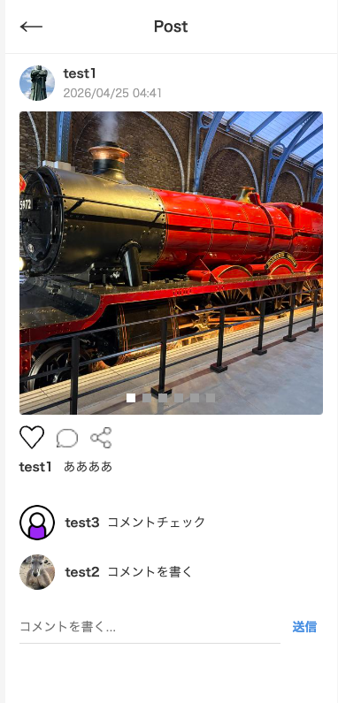
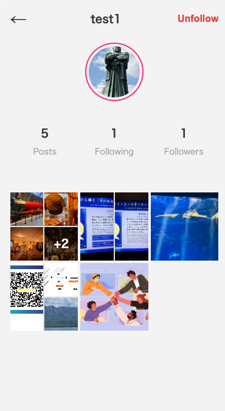

Photo: 桜島
自己紹介
Issei Saito
1996年6月23日生・東京都板橋区出身
東京都立白鷗高等学校普通科 卒業
東邦大学理学部化学科 入学
東邦大学理学部化学科 卒業 → 埼玉大学大学院理工学研究科応用化学コース 入学
埼玉大学大学院 卒業 → 京セラ株式会社 入社
学生時代はサッカーと化学が好きで、社会人になっても無機化学材料（セラミックス）を使って世の中に役立つ製品を開発しています。
現在の仕事

電子機器のICチップは半導体（Siウエハ）を様々な工程で加工して作られます。 静電チャックはこれらの工程でウエハを静電気の力で吸着・固定する装置です。 物理的な接触が不要なため、ウエハを傷つけることなく半導体を製造できます。

静電チャックの特性を決めるセラミックスの作製（前工程）を担当しています。 多層電極構造の実現や工程改善によるコスト削減、事業部初の還元焼成や端子のロウ付け技術などで 開発品を出荷し、事業部に欠かせない技術に携わっています。
自己PR
業務課題を観察・分解し、データに基づく仮説検証で最適解を導き出すことを心がけています。工程改善を通じてリードタイム短縮や品質安定化を実現してきました。
相手の事情を理解し、背景や効果を共有することで信頼を築き、協働を円滑に進めてきました。製造部門や外注業者と協力し、試作流動をスムーズに進める体制を構築しました。

HTML・CSS・JavaScript・jQuery・PHP・Ruby・Ruby on Rails・SQL・Sass・Git・Command Line・Node.js など幅広い言語やツールに触れました。
初級編では HTML・CSS・JavaScript を使い、カフェのランディングページ制作を通じてWebサイト構築の基礎を習得。
中級編では Ruby on Rails・SQL を学びながら実際にWebアプリを開発し、Devise による認証機能や CRUD 機能を実装。
上級編では Ajax を用いた非同期通信・Sidekiq による非同期処理・RSpec（request spec / system spec）でのテスト・セキュリティ対策まで取り組み、デプロイまで一通りの開発フローを実践しました。




Instagram のような写真共有 Web アプリ。ユーザー認証・プロフィール画像変更・複数枚写真投稿・Hotwire Turbo によるいいね＆コメント・メール通知・フォロー・タイムライン機能を実装。本番環境は AWS S3・Kamal でデプロイし、model / request / system spec でテストも作成しました。開発の過程は Zenn に記事として公開しています。